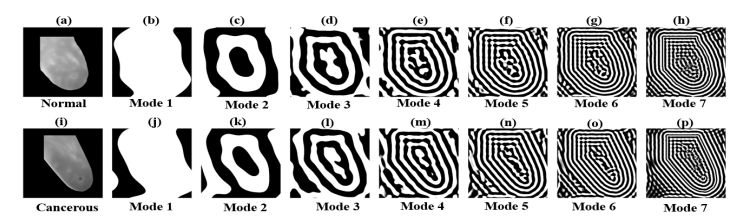
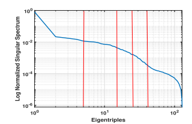
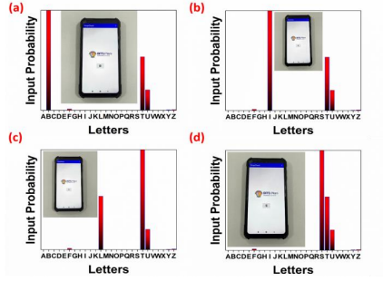
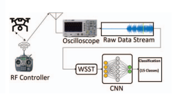

Publications
Asterisk (*) indicates equal contribtion (co-first author)
|
|

|
Multiscale Analysis Domain Interpretable Deep Neural Network for Detection of Breast Cancer Using Thermogram Images
Anurag Gade,
Dinesh Kumar Dash, T. Mita Kumari, Samit Kumar Ghosh, Rajesh Kumar Tripathy, Ram Bilas Pachori
IEEE Transactions on Instrumentation and Measurement, 2023
Paper / bibtex
Detecting breast cancer from thermograms using 2D Empirical Wavelet Transform (2D EWT) with fixed boundary points for multiscale analysis of the input scans, which provides interpretability in terms of frequency ranges. The obtained modes are inputs to the Deep Feature Extractor Blocks (DFEBs), which is the core to the proposed Multiscale Analysis Domain Interpretable Deep Learning (MSADIDL) architecture with which an accuracy of 99.54% was obtained.
|
|

|
Detection of Myocardial Infarction From 12-Lead ECG Trace Images Using Eigendomain Deep Representation Learning
Sathvik Bhaskarpandit*, Anurag Gade*, Shaswati Dash, Dinesh Kumar Dash, Rajesh Kumar Tripathy, Ram Bilas Pachori
IEEE Transactions on Instrumentation and Measurement, 2023
Paper / bibtex
Myocardial Infarction detection from ECG trace images using singular value decomposition (SVD) which extracts the local information based on eigentriple grouping of the input images. A Deep Representation Learning (DRL) architecture is proposed which uses pre-trained EfficientNetV2B2 models parallely for feature extraction from the obtained modes. A classification accuracy of 99.03% was obtained using the proposed eigendomain DRL architecture.
|
|

|
Development of Flexible ReS2/MXene Based Electromechanical Sensor for Deep Learning Assisted Temporal Dependent Alphabet Pattern Recognition
Sohel Siraj, Naveen Bokka, Anurag Gade, Sarang Akella, Chandra Sekhar Reddy Kolli, Parikshit Sahatiya
IEEE Journal on Flexible Electronics (J-FLEX), 2023
Paper / bibtex
Using a fabricated ReS2/MXene sensor for recording the pressure-time characteristics of the written alphabet. The recorded data is transformed into an image representation after which the proposed lightweight Convolutional Neural Network (CNN) architecture was used to classify the input images. The CNN model was loaded on the RaspberryPi board and an Android application was used to demonstrate a use case of the setup acting as a forgery detection system. An accuracy of 96.20% was obtained using the lightweight CNN architecture proposed in this paper.
|
|

|
Classification of UAVs using Time-Frequency Analysis of Remote Control Signals and CNN
Rakesh Reddy Yakkati, Anurag Gade, Balu Harshavardan Koduru, Bethi Pardhasaradhi, Linga Reddy Cenkeramaddi
IEEE International Symposium on Smart Electronic Systems (iSES), 2022
Paper / bibtex
For classifying the unmanned aerial vehicle (UAV) using radio-frequency (RF) fingerprints, Wavelet Synchrosqueezed Transform (WSST) is used to transform the fingerprints to time-frequency images which is the input to the proposed lightweight Convolutional Neural Network (CNN) model. The proposed model is of 387 kilobytes (kB), having a classification accuracy of 99.09% and an inference time of 25.54 ms on the Raspberry Pi.
|
|
{kind=link}